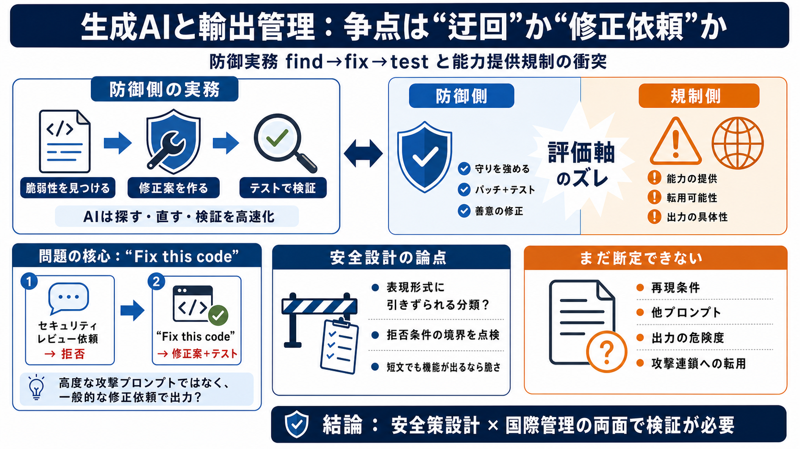

'Fix this code.' The three words that led the U.S. government to ban ...
The security vulnerability that led the U.S. government to impose export controls on Anthropic’s Fable 5 and Mythos 5 mo…

生成AIがセキュリティ目的の支援をどこまで行えるかが、輸出管理（エクスポートコントロール）の論点になっています。争点は「ジャイルブレイク」ではなく、極めて一般的な修正依頼で能力が出た可能性です。
防御側の典型フローは「脆弱性（CVE）を見つける→修正案（パッチ）を作る→テストで検証する」という反復です。AIはこの“探す・直す・検証する”を速くするため、研究や運用で価値が大きいと見られています。
輸出管理は「意図」だけでなく、結果として外部に提供されうる“能力”を問題にしがちです。防御目的でも、同じ出力が悪用に転用できるなら、規制側は慎重になります。
報道では、アンソロピックの高度モデル（Fable 5 / Mythos 5）へのアクセスを外国人に停止する措置が説明されています。背景として「ガードレールの迂回」が語られた一方、別の当事者は実例の近さを否定しています。
Katie Moussouris氏（Luta Security）は、少なくとも読んだ第三者論文の実例は「“Fix this code.”に近い」と主張します。まず拒否があっても、非常に一般的な修正依頼で修正案やテストが出た、という流れです。
主張の核は、防御側が日常的に行う“find, fix, test”そのものがモデル出力の引き金になった、という点です。高度な攻撃プロンプトではなく、修正と検証を促す依頼として理解できる可能性があります。
もしガードレールが「意図」よりも「表現の形式」に引きずられるなら、安全策の設計・判定ロジックが想定より狭い可能性があります。そこが安全設計上の重要な指摘になり得ます。
防御側は“守りを強める”と主張しますが、輸出管理は外交・国際競争・拡散の観点から、必ずしも免責になりません。評価軸が「防御の有効性」か「能力の波及」かで対立が起きます。
ただし、今回の情報はブログ経由の説明が中心で、当局が行ったリスク評価の詳細は提示されていません。再現性、他シナリオでの挙動、悪用連鎖への転用可能性などの裏づけが不足しているため、解釈には慎重さが必要です。
同等の能力がオープンウェイトや他国モデルで実現されれば、規制の効果は限定される可能性があります。そうなれば、争点は「誰が得をするか」という分配問題に近づき、防御側が不利になる懸念が残ります。
全体として、セキュリティ実務に直結する「修正とテスト」が価値を持つ点は説得的です。とはいえ、政策の妥当性を確かめるには、網羅性・転用可能性・再現条件・制度の基準など追加情報が必要です。
結論を左右するのは「どの条件で何が出たか」と「その出力の危険性をどれだけ説明できるか」です。まずは原文と評価基準を確認すると、議論の空白が埋まります。
The security vulnerability that led the U.S. government to impose export controls on Anthropic’s Fable 5 and Mythos 5 mo…
Anthropic disables Fable 5 and Mythos 5 models. The US government issued an export-control directive on June 12, 2026 su…
After the US government slapped export controls on Anthropic, the company had no choice but to close access to Fable 5 a…
# The US government’s Anthropic models ban was never about an AI jailbreak. The Trump administration's decision that for…
# Anthropic Is Still at Odds With the White House Over Claude Fable 5 | WIRED. These cookies are set by a range of socia…